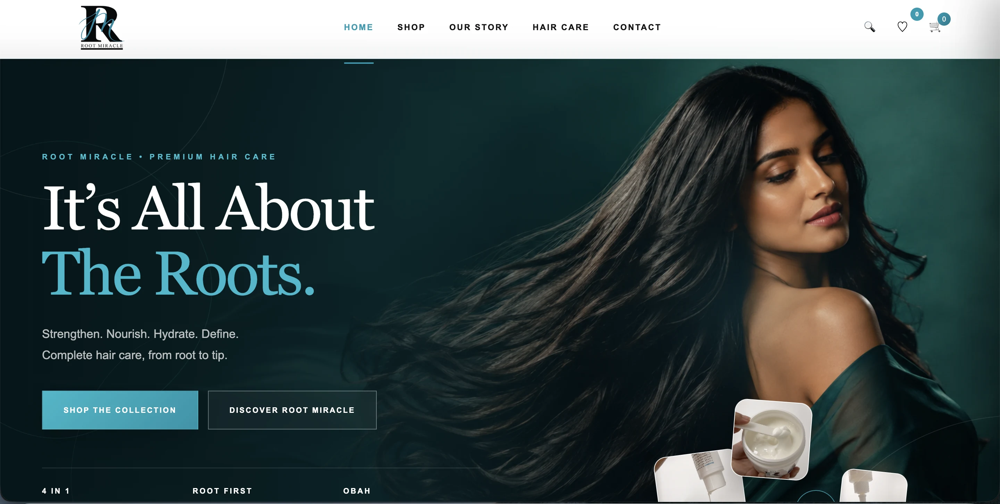
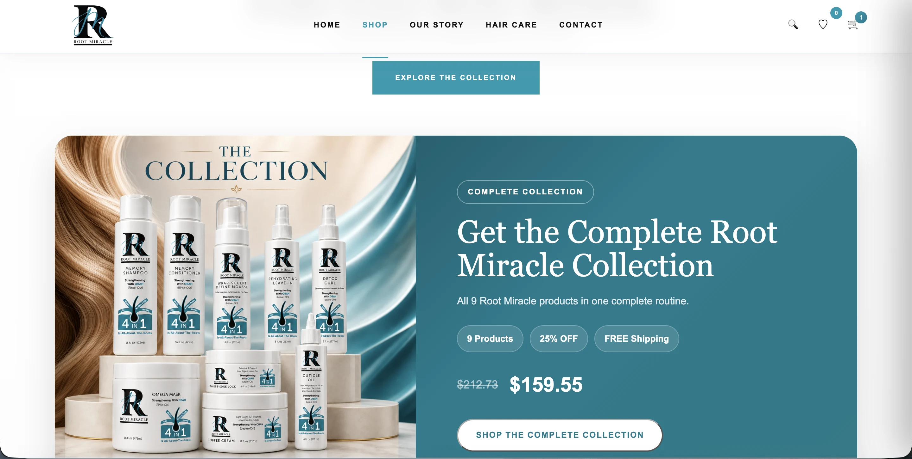
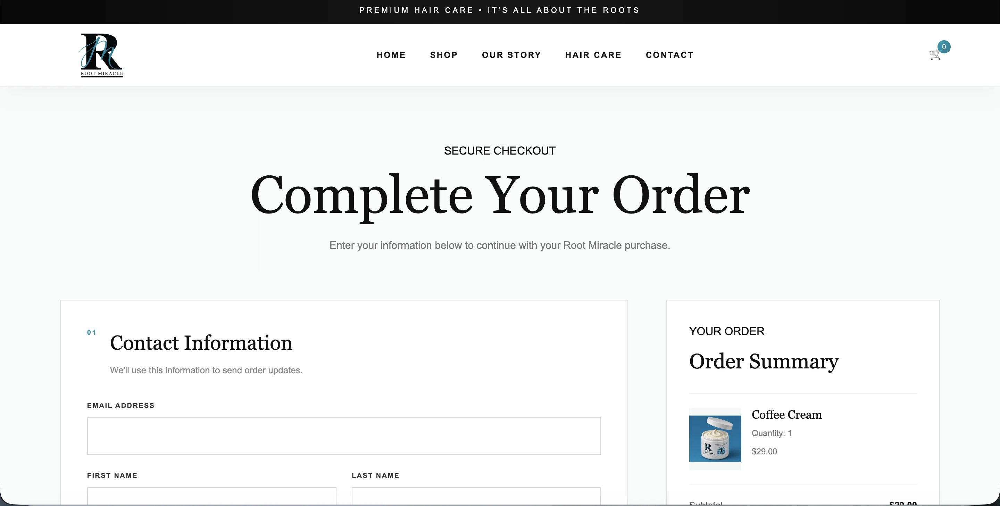
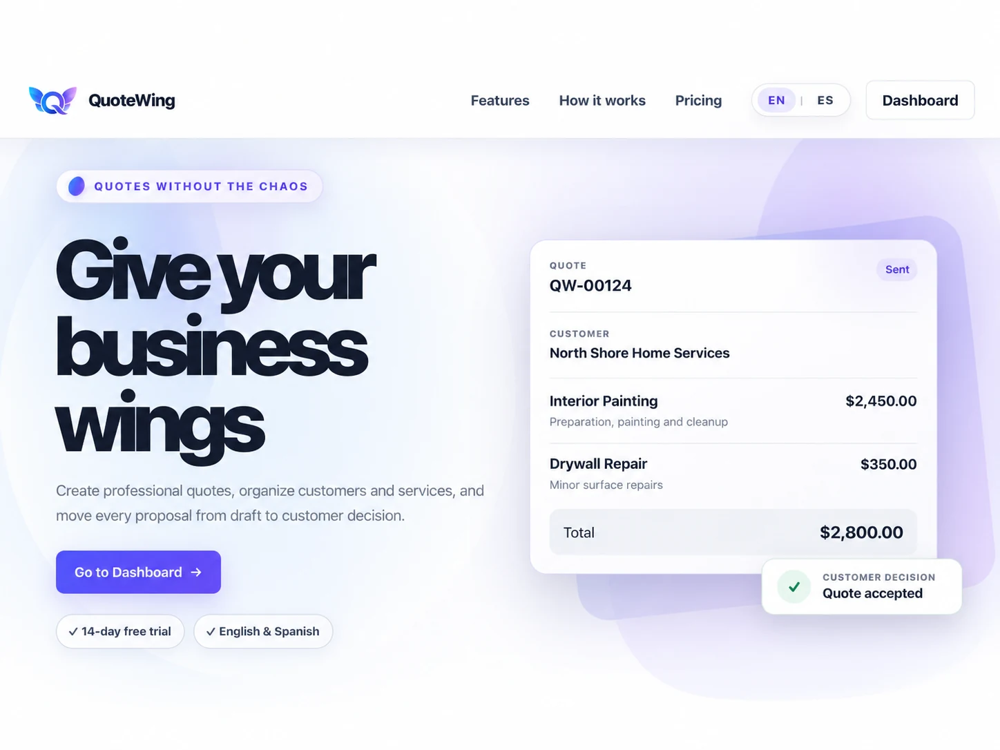
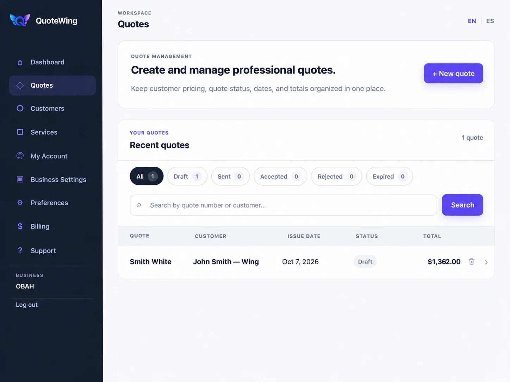
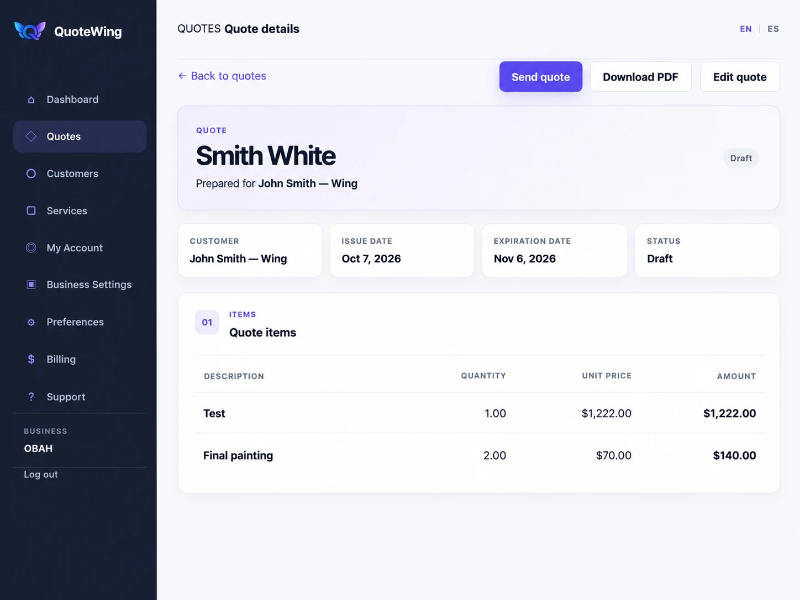

Problem Solving
Investigating technical issues and identifying practical solutions.
Through Butterfly Logic Tech, I develop practical web applications, software solutions, and digital tools for businesses. My portfolio highlights real-world projects, technical problem-solving, and a commitment to technology that works for people.
I am a technology professional with hands-on experience in software development, web applications, data analysis, and technical problem-solving.
I enjoy understanding how systems work, identifying issues, and creating practical solutions that improve processes and user experiences.
My background in psychology also strengthens the way I approach technology through communication, observation, analytical thinking, and attention to detail.
Investigating technical issues and identifying practical solutions.
Building applications and digital solutions using modern technologies.
Combining technology with clear communication and a strong customer-support mindset.

Create a complete online shopping experience for a professional hair-care brand, combining product discovery, secure checkout, shipping, order management, and customer communication.
I designed and developed a responsive e-commerce experience with product catalog functionality, shopping cart, Stripe checkout, FedEx shipping integration, tracking, and automated customer notifications.


An independently developed SaaS platform designed to simplify quote creation, customer management, and business workflows for service-based businesses.

Service businesses need a faster and more professional way to create, send, organize, and track customer quotes without relying on fragmented tools or manual workflows.
I built a Django-based SaaS platform where businesses can manage customers and services, create professional quotes, generate PDFs, send proposals, track quote status, and manage customer decisions from one workspace.


Full-stack eCommerce application with vendors, buyers, authentication, product management, reviews, shopping cart functionality, and REST API integration.
Django publishing platform featuring role-based authentication, editorial workflows, newsletters, subscriptions, article approvals, and REST API integration.
Django notes application demonstrating CRUD functionality, templates, URL routing, form handling, and SQLite database integration.
My technical foundation combines software development, data analysis, integrations, and hands-on troubleshooting.
Building web applications, business workflows, and practical software solutions.
Working with structured data, analysis workflows, databases, and machine-learning fundamentals.
Connecting applications with external services, deployment tools, and production workflows.
Investigating issues, testing systems, documenting solutions, and supporting users.
Butterfly Logic Tech provides practical technology solutions designed to support businesses, improve workflows, and bring ideas to life.
Create professional websites, responsive experiences, and e-commerce solutions tailored to business needs.
Develop web applications, backend systems, APIs, and practical software tools for businesses.
Organize data, build reporting workflows, and create digital tools that support informed business decisions.
Assist with troubleshooting, software integrations, testing, implementation, and technical workflows.
Have a project in mind or a professional opportunity to discuss? Butterfly Logic Tech welcomes inquiries about web development, software solutions, technical support, and technology-focused roles.